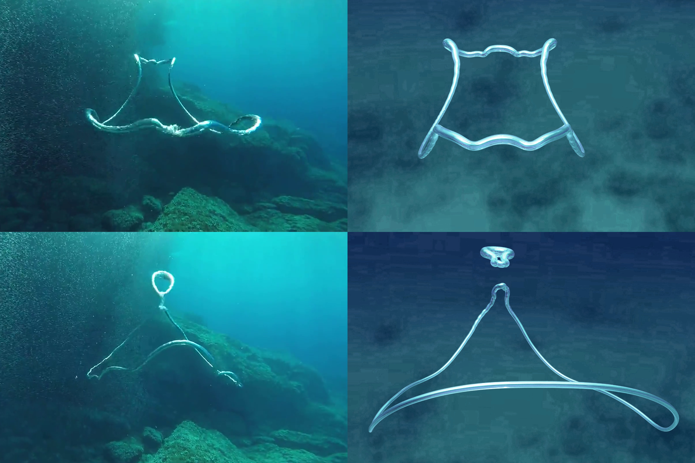

Simulation and rendering of the evolution of underwater bubble rings according to fluid dynamics.
|

|
We will attempt to simulate the appearance and behavior of underwater "bubble rings" in a physically accurate manner. The problem of rendering and physically describing bubble rings is important because it allows us to show that fascinating natural phenomena can actually be simplified and modeled on a computer effectively. For example, when we learned path tracing in this course, we ran into the problem of simulating infinite bounces of light, like in the real world. But, through the power of mathematical techniques like Monte Carlo integration, we were able to provide a close approximation. Similarly, we will show that bubble rings can surprisingly be approximated using mathematical equations (like in project 4, where we modeled cloth physics). Bubble ring rendering and simulation is challenging because not only do we have to understand how physical aspects like light work underwater (as well as how to simulate motion underwater), but we also need to showcase the accurate appearance of a bubble ring which requires complex fluid dynamics equations. Moreover, we will likely have to decide what technologies we want to use to showcase our technical expertise appropriately (some examples of bubble rings are illustrated in Houdini, though we will likely use other frameworks and technologies). Our general approach will be to first familiarize ourselves with all research materials, then learn about water physics and its implementation, then describing bubble rings, and then finally simulating the motion of bubble rings.
The goals for this project are to: implement the physics of bubble rings in water, simulate the evolution of the bubble ring, capture the collision of two rings, and visualize this result with a simple rendering and animation.
The project is based on a paper included below, and requires some understanding of advanced fluid mechanics. Ryu has some background in this field and will look to break down the equations into an understandable form. In addition, the paper provides a rough outline of an implementation of this simulation in SideFX Houdini and several example videos, which we will be able to reference and compare our results to. We plan to build the physics from the ground up in c++ potentially based on some assignment codes, but have the backup option to use Houdini as a physics engine.
The bubble ring is modeled by a “vortex filament” object, which is a closed polygon with a thickness and volume at each edge, as well as the circulation of the fluid. The equations of motion and other fluid mechanics are applied on this filament object to evolve it over time. A check is needed at each time step to determine if the bubble ring will split or combine with another ring.
The primary way we will measure the quality of our system is if it passes the eye check - if the results we get match the results provided in the paper we are following.
With our analysis, we want to determine the complexity of rendering vortex filaments and whether it is possible.
Some reach goals include: simulating the breakup of bubble rings as it gets thinner closer to the surface, rendering underwater lighting interactions with the bubble, and creating an interactive interface to play with the simulation.
Week 1: Familiarize ourselves with the research papers/resources. Look into what we can use as a starting point of our codebase.
Week 2: Get a working demo of the simulation of a bubble ring and how it evolves over time.
Week 3: Render and/or animate the bubble rings.
Week 4: Simulate the collision of two bubble rings. If time allows, look into the reach goals.
We have a paper that describes the dynamics of bubble rings: https://cseweb.ucsd.edu/~alchern/projects/BubbleRingsInkChandeliers/. We also have a presentation by one of the authors of this paper, https://www.youtube.com/watch?v=ZZt80lk6-O0&t=154s. This paper provides mathematical formulation and describes the numerical algorithms necessary to simulate bubble rings. We will be using our laptops for now, and maybe move to more powerful hardware if absolutely necessary. The implementation of project 4 will be a good foundation since it is also simulation, and we could look to project 3 later on in some of our reach goals, like realistically rendering light interactions with the bubble ring. A paper referenced in the bubble rings paper includes the ring splitting and merging criteria: Filament-based smoke with vortex shedding and variational reconnection https://dl.acm.org/doi/10.1145/1778765.1778852